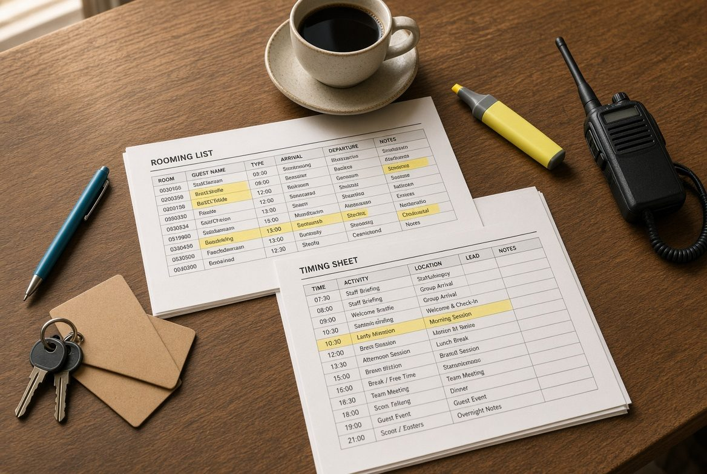

Antes
El grupo sale escrito
Nada importante vive solo en la cabeza.

Si el martes sales a la calle con 40 personas, esto es para ti. Leisure, incentivo, congreso, evento, crucero o deporte. El oficio de tierra — y un sistema que sigue ordenando el grupo cuando acaba la semana.


Para quién
Acompañas · campo
El grupo te mira a ti cuando el plan se tuerce.
Preparas · mesa
Quien escribe el briefing y vive el martes desde la mesa.
El grupo
No hace falta venir de MICE.
Posicionamiento
Es
No es
Método Tierra
Quince años en la calle pasados a un método. Lo que lo hace fácil, rápido y ordenado es aplicarlo con inteligencia artificial — no aprenderse otro temario.
Antes
Nada importante vive solo en la cabeza.
En la calle
Se decide sin improvisar delante del grupo.
Cierre
Lo que se aprende no se pierde con el servicio.
Quién enseña
CEO de Por Aquí Conmigo. Más de 15 años coordinando y moviendo grupos: leisure, incentivo, reuniones, eventos y cruceros. La escuela tiene una cara. La suya.
El martes no puede depender de la memoria.
Ha estado donde tú estás. Por eso puede enseñártelo — y dejar el método en marcha cuando vuelves a tu ciudad.

La semana
El aula enciende el método. No es un temario para archivar. Es una semana para dejarlo instalado.

Mesa: el grupo se ordena antes de salir.

Calle: el timing se camina.
Después de la semana
Sales con una mesa que sigue ordenando cada grupo. Mandas lo mínimo. Recibes el paquete listo para la calle. Lo ves en un tablero y en un calendario. Fácil. Rápido. Ordenado.
01
El Método Tierra se aprende usándolo, no memorizándolo.
02
Una hoja o un formulario por servicio. Nada de volver a montar el martes desde cero.
03
Inteligencia artificial aplicada al método. El paquete llega ordenado.
Los primeros meses van con la cohorte. Si te sirve, la mesa se mantiene. El detalle lo cierra Andrea al hablar.
Presencial
Cinco días porque hay cosas que no se aprenden en una videollamada: leer un espacio, caminar un timing, coordinarse y resolver con el reloj corriendo.

Antes · online
El lunes no empieza desde cero.
Barcelona · 5 días
Presencia, tiempo y grupo.
Después · online
El método se queda en tu operativa.
Así es un día de verdad
Situaciones del oficio, anonimizadas. No son reseñas.
Palma · leisure · guía
El grupo salía de la cabeza.
Decisión
Ordenar el servicio antes de salir.
Resultado
El check-in dura lo que tiene que durar.
Madrid · incoming · ops
Algo que ya debería estar resuelto.
Decisión
Dejar el servicio escrito y compartido.
Resultado
Nadie pregunta lo que ya está decidido.
Sevilla · incentivo · coordinadora
Sin orden, todo invita a improvisar.
Decisión
Activar a quien decide, no al grupo.
Resultado
El grupo recibe una solución.
Cohorte cero
Cinco días en Barcelona, dos encuentros online y meses de mesa en marcha. Fecha y precio los cierra Andrea antes de pedirte ningún compromiso.
Qué incluye
Preguntas cortas